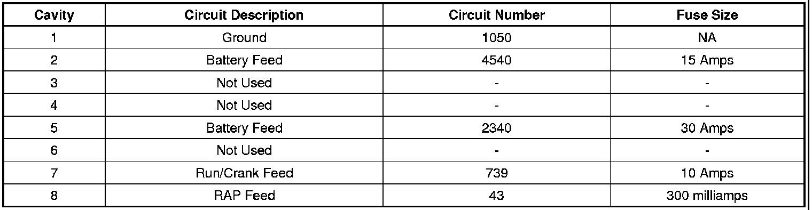

Electrical - Installation Of Aftermarket Accessories
INFORMATIONBulletin No.: 08-08-45-004C
Date: April 08, 2011
Subject: Installation of Electrical Aftermarket Accessories - Battery, Ignition and Ground Feeds - Do Not Splice into Wiring Harness (Install Diode to Solenoid/Relay to Suppress Voltage Spikes)
Models:
2007-2012 Cadillac Escalade, Escalade ESV, Escalade EXT
2007-2012 Chevrolet Avalanche, Silverado, Suburban, Tahoe
2008-2012 Chevrolet Express
2007-2012 GMC Sierra, Sierra Denali, Yukon, Yukon XL, Yukon Denali, Yukon Denali XL
2008-2012 GMC Savana
Supercede:
This bulletin is being revised to add the 2011 and 2012 model years. Please discard Corporate Bulletin Number 08-08-45-004B (Section 08 - Body and Accessories).
Installation of a Diode to Suppress Voltage Spikes
When an electromechanical solenoid or relay is de-energized rapidly by a mechanical switch or semiconductor, the collapsing magnetic field produces a substantial transient voltage in its effort to disperse the stored energy and oppose the sudden change in current flow. These voltage spikes can occur at the positive terminal when the solenoid or relay is de-energized (keyed-off). If a solenoid or relay is wired onto the Run/Crank circuit of the vehicle to control aftermarket equipment, the spikes can be transmitted onto the circuit. The spikes can permanently damage the internal circuitry of the sensitive electronic components and/or control modules that are on this bussed circuit. To prevent damage to these components, the solenoid or relay MUST have the control circuit suppressed with a diode.
Install a diode, P/N 12112422, across the coil of the solenoid. It is important that the striped end of the diode be connected to the positive terminal of the coil and the other end of the diode be connected to ground.
Important
Be sure to insulate the diode with heat shrink tubing before installing as shown in the picture above.
Notice
Some solenoids/relays may only have a positive post and will get their ground through the mounting bracket. In this case, the striped end of the diode is to be connected to the positive terminal and the other end should be connected to the ground of the solenoid/relay.
Install a diode, P/N 12112422, across the coil of the relay. It is important that the striped end of the diode be connected to the positive terminal of the coil and the other end of the diode be connected to ground. Be sure to insulate the diode with heat shrink tubing before installing.
There are two different areas on a fullsize truck or utility vehicle that power and grounds can be acquired without having to splice or cut into the existing wiring. One is the MBEC and the other is the UBEC.
MBEC - Mid-Bussed Electrical Connector
The MBEC is located below the instrument panel to the left of the brake pedal (#4 in the graphic points to the MBEC).
MBEC Location:
The MBEC has 10 positions for connecting electrical connectors. One of these positions is designated for aftermarket utilization. Install a connector (P/N 20791502) into the open position identified in the following graphic.
Within this connector, there is a fused 30 Amp battery feed, a fused 15 Amp battery feed, a fused 10 Amp Run/Crank feed, a 300 milliamp RAP (Retained Accessory Power) feed and a ground.
Location of Connector for Aftermarket Utilization:
Important
Connector P/N 20791502 comes with a one wire lead installed. This lead will need to be removed before the connector is pinned for use with aftermarket electrical devices.
The pin out of the connector is as follows:

UBEC - Underhood Bussed Electrical Center
On vehicles not equipped with an Auxiliary Battery (Auxiliary Battery RPO TP2), there is a stud that could be used for a fused battery feed at the UBEC. The UBEC is located on the left side of the engine compartment (refer to graphic).
Connecting Aftermarket Electrical Devices On Vehicles Not Equipped with TP2:
Important
A J-case fuse (1) with a 40 amp maximum rating MUST be inserted into this position (1) for the stud (2) to be powered.Outboard M6 stud (2) can be used for a fused battery feed.
Wire Gauge Selection
For any of these powered connections to be used, Circuit Protection Guidelines must be followed to assure that the circuit gauge is selected appropriately so that it will be protected by the fuse in case of a short circuit.
Parts Information

Disclaimer